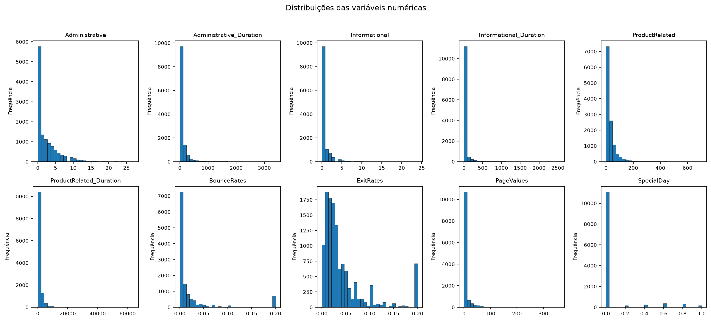
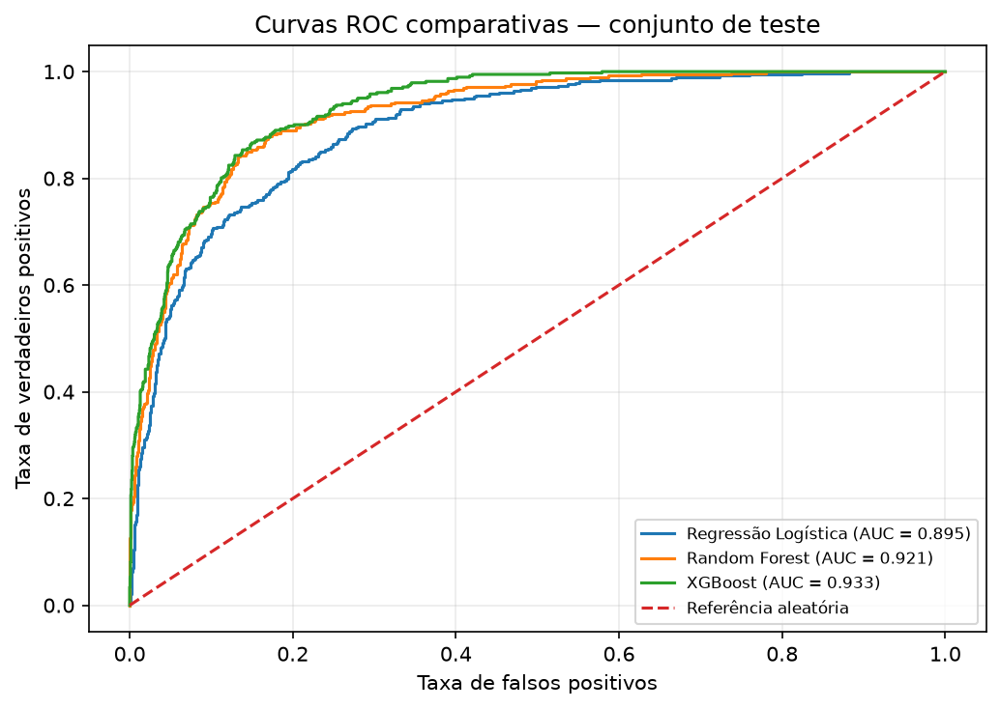

Visão geral do projeto
O objetivo é estimar, a partir do comportamento de navegação, se uma sessão de um site de comércio eletrônico terminará em compra. A variável-alvo, Revenue, vale 1 quando há compra e 0 quando não há.
Modelos não lineares (Random Forest e XGBoost) discriminam compradores de não compradores melhor do que o modelo linear de referência? E qual oferece o melhor equilíbrio entre desempenho, estabilidade e interpretabilidade?
Prever essa propensão permite priorizar ações de marketing (cupons, remarketing, contato ativo) sobre as sessões com maior chance de conversão. Três algoritmos foram comparados com os mesmos dados, a mesma divisão e a mesma estratégia de validação: Regressão Logística (referência simples e interpretável), Random Forest (conjunto de árvores, captura relações não lineares) e XGBoost (boosting, árvores construídas em sequência). A base é o Online Shoppers Purchasing Intention Dataset (Sakar e Kastro, 2018; UCI Machine Learning Repository).
tgi_propensao_compra.ipynb e dos arquivos exportados para output/.Tratamento dos dados
Carga, validação e qualidade
A base tem 12.330 linhas e 18 colunas (17 preditores e a variável-alvo), coincidindo com a referência da UCI. Revenue é convertida para 0/1 por uma função que valida os valores aceitos (booleanos, 0/1 ou textos equivalentes) e gera erro para qualquer outro valor; a conversão direta com astype(bool) foi evitada porque classificaria a string “False” como verdadeira.
Não há valores ausentes nem infinitos em nenhuma coluna. Mesmo assim, o código prevê o tratamento: infinitos seriam convertidos em ausentes na cópia de modelagem e imputados dentro do pipeline. Foram detectadas 125 linhas integralmente duplicadas (1,01%), que foram mantidas: sem identificador de sessão, não é possível afirmar que linhas idênticas sejam o mesmo evento. Essa escolha é registrada como limitação metodológica, e não houve segunda rodada de modelos sem duplicidades.
Valores extremos (regra do IQR)
Os valores extremos foram quantificados pelo intervalo interquartil, mas não foram removidos, limitados nem transformados: sem contexto adicional, não há base para tratá-los como erros, e as distribuições são naturalmente assimétricas (figura ao final desta seção). A padronização numérica ocorre apenas no modelo linear.
Definição dos atributos
As 10 variáveis numéricas são Administrative, Administrative_Duration, Informational, Informational_Duration, ProductRelated, ProductRelated_Duration, BounceRates, ExitRates, PageValues e SpecialDay. As 7 categóricas estão abaixo. Os códigos de OperatingSystems, Browser, Region e TrafficType são identificadores, não quantidades, e por isso foram tratados como categorias. Após o one-hot, as 65 colunas binárias somadas às 10 numéricas resultam em 75 variáveis de entrada.
Pré-processamento dentro do pipeline
Todas as transformações são etapas do Pipeline (preprocessador + modelo) e são ajustadas apenas com os dados de treino de cada fold da validação cruzada. Nenhum imputador, codificador ou escalador foi ajustado antes da divisão, e o conjunto de teste não participou de decisões de tratamento nem de seleção de hiperparâmetros.
| Modelo | Variáveis numéricas | Variáveis categóricas |
|---|---|---|
| Regressão Logística | Imputação pela mediana + StandardScaler | Imputação pela categoria mais frequente + OneHotEncoder(handle_unknown="ignore") |
| Random Forest e XGBoost | Imputação pela mediana, sem padronização (desnecessária para árvores) | Igual ao anterior |
Desbalanceamento e divisão dos dados
A distribuição original foi preservada: não se usou SMOTE nem sub ou sobreamostragem. O desbalanceamento é tratado por pesos: class_weight="balanced" na Regressão Logística e no Random Forest, e scale_pos_weight = 5,4640 no XGBoost (negativos ÷ positivos, calculado somente em y_train: 8.338 ÷ 1.526). Os pesos ajudam a considerar a classe minoritária, mas não dispensam a leitura de precisão, recall, F1 e matrizes de confusão.
A divisão é um holdout estratificado de 80%/20% com random_state=42, o que manteve a proporção de compras praticamente idêntica nos dois conjuntos.

Protocolo de avaliação
Os três modelos foram otimizados e avaliados exatamente da mesma forma: a validação cruzada escolhe os hiperparâmetros e o conjunto de teste, mantido isolado, mede o desempenho final.
| Etapa | Configuração |
|---|---|
| Divisão | Holdout estratificado: 9.864 sessões de treino e 2.466 de teste (random_state=42) |
| Validação cruzada | StratifiedKFold com 5 folds, shuffle=True e random_state=42, aplicada somente ao treino |
| Busca de hiperparâmetros | GridSearchCV com refit="roc_auc"; paralelismo (n_jobs=-1) apenas na busca, com os estimadores em um processo |
| Métricas na validação | AUC-ROC, F1, precisão, recall e acurácia, todas calculadas em cada fold e então promediadas |
| Espaço de busca | 3 (Regressão Logística) + 8 (Random Forest) + 8 (XGBoost) = 19 combinações × 5 folds = 95 ajustes, além do reajuste final de cada busca |
| Critério de seleção | AUC-ROC média da validação cruzada (principal); F1 (secundário) |
| Limiar de classificação | 0,5 fixo sobre as probabilidades previstas, sem otimização no teste |
| Avaliação final | Melhor pipeline de cada modelo aplicado uma única vez ao teste; zero_division=0 nas métricas que dependem de previsões da classe positiva |
| Reprodutibilidade | RANDOM_STATE = 42 em todas as etapas aplicáveis |
O conjunto de teste só é consultado depois que a validação cruzada define a melhor configuração de cada modelo. Assim, o teste estima o desempenho em dados novos sem ter influenciado nenhuma escolha.
Métricas utilizadas
Na matriz de confusão, um falso positivo (FP) é uma sessão prevista como compra que não comprou; um falso negativo (FN) é uma compra real não identificada. VP e VN são os acertos nas classes compra e não compra.
| Métrica | Definição | Como interpretar |
|---|---|---|
| AUC-ROC | Área sob a curva ROC, calculada com as probabilidades | Chance de um comprador sortear um escore maior que o de um não comprador; independe do limiar |
| Precisão | VP ÷ (VP + FP) | Entre as sessões sinalizadas como compra, quantas realmente compraram |
| Recall | VP ÷ (VP + FN) | Entre os compradores reais, quantos foram identificados |
| F1 | 2 × precisão × recall ÷ (precisão + recall) | Média harmônica; penaliza desequilíbrio entre precisão e recall |
| Acurácia | (VP + VN) ÷ total | Proporção de acertos; enganosa com 84,5% de “não compra” |
Hiperparâmetros fixos e grades de busca
Como ler os resultados
- Validação cruzada × teste. A média e o desvio-padrão entre folds mostram o desempenho esperado e sua variabilidade; o teste mostra o desempenho em dados nunca vistos. Diferenças pequenas entre os dois indicam boa generalização.
- Escolha pelo AUC, leitura pelo conjunto. O AUC-ROC seleciona a configuração, mas a decisão final considera F1, precisão, recall, matrizes de confusão, consistência, tempo e interpretabilidade.
- Importâncias não são comparáveis entre algoritmos. Coeficientes da logística (escala logarítmica, com sinal) e importâncias de árvores têm significados e escalas diferentes.
- Associação não é causa. As variáveis influentes descrevem padrões do modelo, não efeitos causais.
Discussão e conclusão
Objetivo. Comparar Regressão Logística, Random Forest e XGBoost na previsão de compra em 12.330 sessões de e-commerce. Método. Pipeline sem vazamento, holdout estratificado 80/20, validação cruzada estratificada de 5 folds e busca em grade com critério principal de AUC-ROC. Resultados. O XGBoost obteve a maior AUC-ROC (93,4% na validação cruzada; 93,3% no teste) e o maior recall (84,6%); o Random Forest teve a maior precisão e o maior F1 na validação cruzada; a Regressão Logística teve o menor desempenho, mas é a mais interpretável. Conclusão. Os modelos não lineares superaram o linear de forma consistente; a diferença entre eles é pequena, e a escolha depende do custo relativo dos dois tipos de erro.
Resultados comparativos

Validação cruzada: média ± desvio-padrão entre folds
Discussão
- Modelos não lineares superam o linear. No teste, a AUC-ROC do XGBoost é 3,8 p.p. maior que a da Regressão Logística, e a do Random Forest, 2,6 p.p. maior. Na validação cruzada, a diferença do XGBoost é de 2,8 p.p., várias vezes o desvio-padrão entre folds da logística (0,7 p.p.).
- XGBoost e Random Forest estão próximos. A diferença de AUC-ROC entre eles é de 0,5 p.p. na validação cruzada, da ordem de um desvio-padrão (0,4 p.p.), e de 1,1 p.p. no teste. A vantagem do XGBoost tem o mesmo sentido nas duas avaliações, mas não é decisiva.
- A diferença está no tipo de erro. Em relação ao Random Forest, o XGBoost identifica 24 compradores a mais (323 contra 299) ao custo de 45 falsos alarmes adicionais (284 contra 239).
- Generalização. A diferença entre AUC-ROC na validação cruzada e no teste é de 0,1 p.p. (XGBoost), 0,7 p.p. (Random Forest) e 1,1 p.p. (Regressão Logística): nenhum modelo apresenta sinal forte de sobreajuste.
- Um sinal domina todos os modelos. PageValues é a variável mais importante nos três (coeficiente 2,21 na logística; importância de 42% no Random Forest e 30% no XGBoost). Como é um indicador derivado do valor das páginas visitadas, convém verificar se estaria disponível no momento da decisão de marketing.
- Sazonalidade importa. Month_Nov tem efeito positivo na logística (+0,70) e, no XGBoost, novembro, março, maio e setembro somam cerca de 27% da importância.
- Acurácia não basta. No teste, a acurácia da Regressão Logística (84,5%) é igual à de classificar todas as sessões como “não compra”. O ganho dos modelos está em AUC-ROC, recall e F1.
Impacto financeiro estimado
Para traduzir a diferença de acertos em valor, foi adotado um valor fixo hipotético por compra, pois a base não contém valores monetários. A simulação considera as 382 compras reais do conjunto de teste (2.466 sessões): cada compra identificada pelo modelo conta como uma venda capturada, e cada compra não identificada, como uma venda deixada escapar. Altere os valores abaixo para testar outros cenários.
Conclusão do estudo
- Segundo o critério definido de antemão (AUC-ROC média na validação cruzada, com F1 como desempate), o XGBoost é o modelo preferível: 93,4% de AUC-ROC na validação cruzada, 93,3% no teste e a menor diferença entre os dois (0,1 p.p.).
- O Random Forest é uma alternativa equivalente em F1 no teste (65,0% contra 65,3%) e superior em precisão (55,6% contra 53,2%), com menos falsos alarmes.
- A Regressão Logística tem desempenho inferior em todas as métricas de discriminação, mas oferece coeficientes com sinal e serve como referência explicável.
- A hipótese de que modelos não lineares discriminam melhor do que o modelo linear foi sustentada pelos dados, tanto na validação cruzada quanto no teste. A superioridade do XGBoost sobre o Random Forest é pequena e não pode ser tratada como definitiva.
Recomendação: adotar o XGBoost como modelo principal e manter a Regressão Logística como referência interpretável.
Qual modelo usar em cada caso
Capturar o máximo de compradores: XGBoost
Maior AUC-ROC (93,3%) e maior recall (84,6%). Indicado para ações de baixo custo por contato, como remarketing e e-mails, em que perder um comprador é pior do que abordar um não comprador. É também o de busca mais rápida (2,1 s).
Reduzir abordagens desperdiçadas: Random Forest
Maior precisão (55,6%) e acurácia (86,9%) no teste, com F1 praticamente igual ao do XGBoost (65,0% contra 65,3%). Indicado quando cada contato tem custo, como descontos ou atendimento humano.
Explicar para a área de negócio: Regressão Logística
Desempenho inferior (AUC-ROC de 89,5%), porém com coeficientes que indicam direção e intensidade do efeito de cada variável. Indicada como referência e quando a transparência pesa mais que a performance.
Limitações
- As 125 linhas duplicadas foram mantidas. Se duplicatas caírem em treino e teste ao mesmo tempo, o desempenho pode ficar levemente otimista; isso não foi verificado.
- O teste é um único holdout com semente fixa (42); não há intervalo de confiança para as métricas finais.
- O limiar de 0,5 é fixo e não foi ajustado, para não usar o teste na decisão.
- A base não traz custos nem margens, portanto não é possível estimar benefício financeiro.
- Coeficientes e importâncias de árvores têm significados e escalas diferentes e descrevem associações, não causalidade.
Referência
Sakar, C. O.; Kastro, Y. (2018). Online Shoppers Purchasing Intention Dataset. UCI Machine Learning Repository. https://doi.org/10.24432/C5F88Q